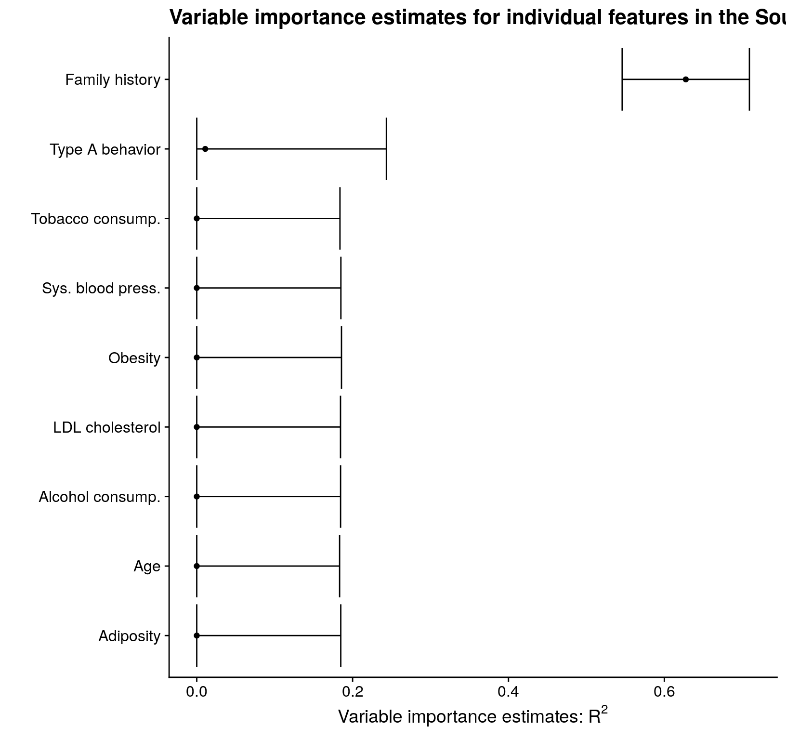
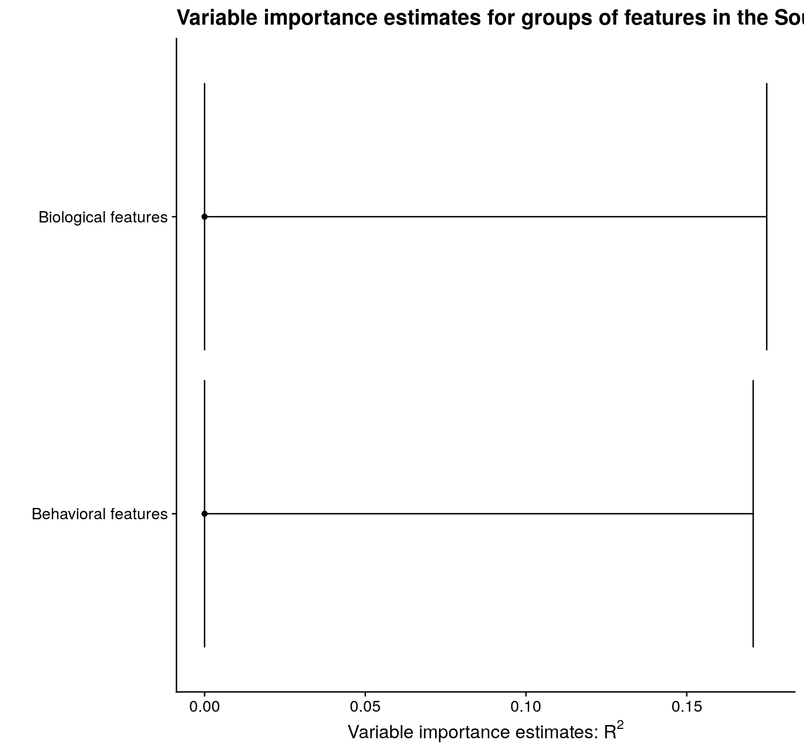

Using precomputed regression function estimates in vimp
Brian D. Williamson
2021-04-27
Source:vignettes/precomputed-regressions.Rmd
precomputed-regressions.RmdIntroduction
In the main vignette, we analyzed the South African heart disease study data (Hastie, Tibshirani, and Friedman 2009) (freely available from the Elements of Statistical Learning website; more information about these data is available here). In each of the analyses, I used run_regression = TRUE. In this vignette, I discuss how to use precomputed regression function estimates with vimp. The results of this analysis replicate the analysis in the main vignette.
# read in the data from the Elements website library("RCurl") heart_data <- read.csv(text = getURL("http://web.stanford.edu/~hastie/ElemStatLearn/datasets/SAheart.data"), header = TRUE, stringsAsFactors = FALSE) # minor data cleaning heart <- heart_data[, 2:dim(heart_data)[2]] heart$famhist <- ifelse(heart$famhist == "Present", 1, 0) # sample-splitting folds for hypothesis testing heart_folds <- sample(rep(seq_len(2), length = dim(heart)[1]))
Using precomputed regression function estimates without cross-fitting
A first approach: linear regression
As in the main vignette, we first start by fitting only linear regression models. In this section, we use the function vim(); this function does not use cross-fitting to estimate variable importance, and greatly simplifies the code for precomputed regression models.
full_mod <- lm(chd ~ ., data = heart) full_fit <- predict(full_mod) # estimate the reduced conditional means for each of the individual variables # remove the outcome for the predictor matrix X <- as.matrix(heart[, -dim(heart)[2]]) # get the full regression fit and use as outcome for reduced regressions; this may provide some stability in this analysis full_fit_2 <- predict(lm(chd ~ ., data = heart)) red_mod_sbp <- lm(full_fit ~ X[,-1]) red_fit_sbp <- predict(red_mod_sbp) red_mod_tob <- lm(full_fit ~ X[,-2]) red_fit_tob <- predict(red_mod_tob) red_mod_ldl <- lm(full_fit ~ X[,-3]) red_fit_ldl <- predict(red_mod_ldl) red_mod_adi <- lm(full_fit ~ X[,-4]) red_fit_adi <- predict(red_mod_adi) red_mod_fam <- lm(full_fit ~ X[,-5]) red_fit_fam <- predict(red_mod_fam) red_mod_tpa <- lm(full_fit ~ X[, -6]) red_fit_tpa <- predict(red_mod_tpa) red_mod_obe <- lm(full_fit ~ X[,-7]) red_fit_obe <- predict(red_mod_obe) red_mod_alc <- lm(full_fit ~ X[, -8]) red_fit_alc <- predict(red_mod_alc) red_mod_age <- lm(full_fit ~ X[,-9]) red_fit_age <- predict(red_mod_age) # plug the regression function estimates into vim lm_vim_sbp <- vim(Y = heart$chd, f1 = full_fit, f2 = red_fit_sbp, indx = 1, run_regression = FALSE, type = "r_squared", sample_splitting_folds = heart_folds) #> Warning in vim(Y = heart$chd, f1 = full_fit, f2 = red_fit_sbp, indx = 1, : #> Original estimate < 0; returning zero. lm_vim_tob <- vim(Y = heart$chd, f1 = full_fit, f2 = red_fit_tob, indx = 2, run_regression = FALSE, type = "r_squared", sample_splitting_folds = heart_folds) #> Warning in vim(Y = heart$chd, f1 = full_fit, f2 = red_fit_tob, indx = 2, : #> Original estimate < 0; returning zero. lm_vim_ldl <- vim(Y = heart$chd, f1 = full_fit, f2 = red_fit_ldl, indx = 3, run_regression = FALSE, type = "r_squared", sample_splitting_folds = heart_folds) #> Warning in vim(Y = heart$chd, f1 = full_fit, f2 = red_fit_ldl, indx = 3, : #> Original estimate < 0; returning zero. lm_vim_adi <- vim(Y = heart$chd, f1 = full_fit, f2 = red_fit_adi, indx = 4, run_regression = FALSE, type = "r_squared", sample_splitting_folds = heart_folds) #> Warning in vim(Y = heart$chd, f1 = full_fit, f2 = red_fit_adi, indx = 4, : #> Original estimate < 0; returning zero. lm_vim_fam <- vim(Y = heart$chd, f1 = full_fit, f2 = red_fit_fam, indx = 5, run_regression = FALSE, type = "r_squared", sample_splitting_folds = heart_folds) #> Warning in vim(Y = heart$chd, f1 = full_fit, f2 = red_fit_fam, indx = 5, : #> Original estimate < 0; returning zero. lm_vim_tpa <- vim(Y = heart$chd, f1 = full_fit, f2 = red_fit_tpa, indx = 6, run_regression = FALSE, type = "r_squared", sample_splitting_folds = heart_folds) #> Warning in vim(Y = heart$chd, f1 = full_fit, f2 = red_fit_tpa, indx = 6, : #> Original estimate < 0; returning zero. lm_vim_obe <- vim(Y = heart$chd, f1 = full_fit, f2 = red_fit_obe, indx = 7, run_regression = FALSE, type = "r_squared", sample_splitting_folds = heart_folds) #> Warning in vim(Y = heart$chd, f1 = full_fit, f2 = red_fit_obe, indx = 7, : #> Original estimate < 0; returning zero. lm_vim_alc <- vim(Y = heart$chd, f1 = full_fit, f2 = red_fit_alc, indx = 8, run_regression = FALSE, type = "r_squared", sample_splitting_folds = heart_folds) #> Warning in vim(Y = heart$chd, f1 = full_fit, f2 = red_fit_alc, indx = 8, : #> Original estimate < 0; returning zero. lm_vim_age <- vim(Y = heart$chd, f1 = full_fit, f2 = red_fit_age, indx = 9, run_regression = FALSE, type = "r_squared", sample_splitting_folds = heart_folds) #> Warning in vim(Y = heart$chd, f1 = full_fit, f2 = red_fit_age, indx = 9, : #> Original estimate < 0; returning zero. # make a table with the estimates using the merge_vim() function library("dplyr") #> #> Attaching package: 'dplyr' #> The following objects are masked from 'package:stats': #> #> filter, lag #> The following objects are masked from 'package:base': #> #> intersect, setdiff, setequal, union lm_mat <- merge_vim(lm_vim_sbp, lm_vim_tob, lm_vim_ldl, lm_vim_adi, lm_vim_fam, lm_vim_tpa, lm_vim_obe, lm_vim_alc, lm_vim_age) # print out the matrix lm_mat #> Variable importance estimates: #> Estimate SE 95% CI VIMP > 0 p-value #> s = 1 0 0.003046761 [0, 0.005971542] FALSE 1.0000000 #> s = 2 0 0.003000301 [0, 0.005880481] FALSE 1.0000000 #> s = 3 0 0.003007608 [0, 0.005894804] FALSE 0.9477395 #> s = 4 0 0.003060152 [0, 0.005997787] FALSE 1.0000000 #> s = 5 0 0.002973609 [0, 0.005828167] FALSE 1.0000000 #> s = 6 0 0.003082219 [0, 0.006041039] FALSE 1.0000000 #> s = 7 0 0.003055596 [0, 0.005988859] FALSE 1.0000000 #> s = 8 0 0.003053605 [0, 0.005984957] FALSE 1.0000000 #> s = 9 0 0.003073843 [0, 0.006024621] FALSE 0.9999999
Estimating the importance of a single variable with a large library of learners
Say I have already computed one regression function estimate for the full set of features; call the fitted values from this procedure f1. Further, suppose that I have done estimated a second regression function by removing the indx of interest; call the fitted values from this procedure f2. Then I can use vimp to compute variable importance based on these fitted values. There five main arguments to vim() when I have already computed:
-
Y, the outcome -
f1andf2, the fitted values from a regression procedure (f1used all covariates,f2drops the covariates inindx) -
indx, which determines the feature I want to estimate variable importance for run_regression = FALSE-
folds, a list of folds for hypothesis testing and cross-fitting
I can estimate the variable importance for family history only using one base learner (for illustration; also, using a small number of cross-fitting folds and a small number of Super Learner cross-validation folds) as follows:
# small learners library learners.2 <- c("SL.ranger") # small number of folds V <- 2 sl_cvcontrol <- list(V = 2) # now estimate variable importance fam_vim <- vim(Y = heart$chd, X = heart[, -dim(heart)[2]], indx = 5, SL.library = learners.2, na.rm = TRUE, env = environment(), cvControl = sl_cvcontrol)
I said earlier that I want to obtain estimates of all individual features in these data, so let’s choose type A behavior (tpa) next. Now that I have estimated variable importance for family history, the full_fit object contains our estimate of \(\mu_{P_0}\). Since I have spent the time to estimate this using SuperLearner(), there is no reason to estimate this function again. This leads me to choose (2) above for estimating the importance of type A behavior, since I have already estimated variable importance on one feature in this dataset. Using the small learners library (again only for illustration) yields
# specify that full_fit doesn't change; but note that this was fit on the first half of the data full_fit <- fam_vim$full_fit # get the full fit on the second half of the data; for stability later full_fit_2 <- predict(SuperLearner::SuperLearner(Y = heart$chd, X = heart[, -dim(heart)[2]], SL.library = learners.2, cvControl = sl_cvcontrol))$pred # estimate variable importance for the average number of rooms start_time <- Sys.time() reduced_fit <- SuperLearner::SuperLearner(Y = full_fit_2, X = heart[, -c(6, dim(heart)[2]), drop = FALSE], SL.library = learners.2, cvControl = sl_cvcontrol) end_time <- Sys.time() red_fit <- predict(reduced_fit)$pred tpa_vim <- vim(Y = heart$chd, f1 = full_fit_2, f2 = red_fit, indx = 6, run_regression = FALSE, type = "r_squared", sample_splitting_folds = heart_folds) tpa_vim #> Variable importance estimates: #> Estimate SE 95% CI VIMP > 0 p-value #> s = 6 0.2049797 0.001221279 [0.2025861, 0.2073734] TRUE 0
This takes approximately 0.394 seconds — now rather than estimating both conditional means, I am only estimating one.
I can achieve the same results by also estimating the regression function based on all variables myself, and plugging these estimates into vim(). Note that I am using the folds from the first fit above so that the estimates are consistent with each other; if I was doing this analysis from scratch, I could use heart_folds as I did in the linear regression example. Then vim() returns variable importance estimates based on the inputted fitted values. For example, let’s estimate variable importance for current alcohol consumption using this approach.
# set up the data, removing the columns for alcohol use and chd x <- heart[, -c(8, dim(heart)[2])] # fit an RF model using SuperLearner reduced_mod <- SuperLearner(Y = full_fit_2, X = x, SL.library = learners.2, cvControl = sl_cvcontrol) reduced_fit <- predict(reduced_mod)$pred # this takes 2 seconds # estimate variable importance alc_vim <- vim(Y = heart$chd, f1 = full_fit_2, f2 = reduced_fit, indx = 8, run_regression = FALSE, type = "r_squared", sample_splitting_folds = fam_vim$folds)
I can obtain estimates for the remaining individual features in the same way (again using a small library for illustration):
reduced_sbp <- predict(SuperLearner(Y = full_fit_2, X = heart[, -c(1, dim(heart)[2])], SL.library = learners.2, cvControl = sl_cvcontrol))$pred sbp_vim <- vim(Y = heart$chd, f1 = full_fit_2, f2 = reduced_sbp, indx = 1, run_regression = FALSE, type = "r_squared", sample_splitting_folds = fam_vim$folds) reduced_tob <- predict(SuperLearner(Y = full_fit_2, X = heart[, -c(2, dim(heart)[2])], SL.library = learners.2, cvControl = sl_cvcontrol))$pred tob_vim <- vim(Y = heart$chd, f1 = full_fit_2, f2 = reduced_tob, indx = 2, run_regression = FALSE, type = "r_squared", sample_splitting_folds = fam_vim$folds) reduced_ldl <- predict(SuperLearner(Y = full_fit_2, X = heart[, -c(3, dim(heart)[2])], SL.library = learners.2, cvControl = sl_cvcontrol))$pred ldl_vim <- vim(Y = heart$chd, f1 = full_fit_2, f2 = reduced_ldl, indx = 3, run_regression = FALSE, type = "r_squared", sample_splitting_folds = fam_vim$folds) reduced_adi <- predict(SuperLearner(Y = full_fit_2, X = heart[, -c(4, dim(heart)[2])], SL.library = learners.2, cvControl = sl_cvcontrol))$pred adi_vim <- vim(Y = heart$chd, f1 = full_fit_2, f2 = reduced_adi, indx = 4, run_regression = FALSE, type = "r_squared", sample_splitting_folds = fam_vim$folds) reduced_obe <- predict(SuperLearner(Y = full_fit_2, X = heart[, -c(7, dim(heart)[2])], SL.library = learners.2, cvControl = sl_cvcontrol))$pred obe_vim <- vim(Y = heart$chd, f1 = full_fit_2, f2 = reduced_obe, indx = 7, run_regression = FALSE, type = "r_squared", sample_splitting_folds = fam_vim$folds) reduced_age <- predict(SuperLearner(Y = full_fit_2, X = heart[, -c(9, dim(heart)[2])], SL.library = learners.2, cvControl = sl_cvcontrol))$pred age_vim <- vim(Y = heart$chd, f1 = full_fit_2, f2 = reduced_age, indx = 9, run_regression = FALSE, type = "r_squared", sample_splitting_folds = fam_vim$folds)
Now that I have estimates of each of individual feature’s variable importance, I can view them all simultaneously by plotting:
library("dplyr") library("tibble") library("ggplot2") library("cowplot") theme_set(theme_cowplot()) # combine the objects together ests <- merge_vim(sbp_vim, tob_vim, ldl_vim, adi_vim, fam_vim, tpa_vim, obe_vim, alc_vim, age_vim) all_vars <- c("Sys. blood press.", "Tobacco consump.", "LDL cholesterol", "Adiposity", "Family history", "Type A behavior", "Obesity", "Alcohol consump.", "Age") est_plot_tib <- ests$mat %>% mutate( var_fct = rev(factor(s, levels = ests$mat$s, labels = all_vars[as.numeric(ests$mat$s)], ordered = TRUE)) ) # plot est_plot_tib %>% ggplot(aes(x = est, y = var_fct)) + geom_point() + geom_errorbarh(aes(xmin = cil, xmax = ciu)) + xlab(expression(paste("Variable importance estimates: ", R^2, sep = ""))) + ylab("") + ggtitle("Estimated individual feature importance") + labs(subtitle = "in the South African heart disease study data")

Estimating variable importance for a group of variables
Now that I have estimated variable importance for each of the individual features, I can estimate variable importance for each of the groups that I mentioned above: biological and behavioral features.
The only difference between estimating variable importance for a group of features rather than an individual feature is that now I specify a vector for s; I can use any of the options listed in the previous section to compute these estimates.
# get the estimates reduced_behav <- predict(SuperLearner(Y = heart$chd, X = heart[, -c(2, 6, 8, dim(heart)[2])], SL.library = learners.2, cvControl = sl_cvcontrol))$pred behav_vim <- vim(Y = heart$chd, f1 = full_fit_2, f2 = reduced_behav, indx = c(2, 6, 8), run_regression = FALSE, type = "r_squared", sample_splitting_folds = fam_vim$folds) reduced_bios <- predict(SuperLearner(Y = heart$chd, X = heart[, -c(1, 3, 4, 5, 7, 9, dim(heart)[2])], SL.library = learners.2, cvControl = sl_cvcontrol))$pred bios_vim <- vim(Y = heart$chd, f1 = full_fit_2, f2 = reduced_bios, indx = c(1, 3, 4, 5, 7, 9), run_regression = FALSE, type = "r_squared", sample_splitting_folds = fam_vim$folds) # combine and plot groups <- merge_vim(behav_vim, bios_vim) all_grp_nms <- c("Behavioral features", "Biological features") grp_plot_tib <- groups$mat %>% mutate( grp_fct = factor(case_when( s == "2,6,8" ~ "1", s == "1,3,4,5,7,9" ~ "2" ), levels = c("1", "2"), labels = all_grp_nms, ordered = TRUE) ) grp_plot_tib %>% ggplot(aes(x = est, y = grp_fct)) + geom_point() + geom_errorbarh(aes(xmin = cil, xmax = ciu)) + xlab(expression(paste("Variable importance estimates: ", R^2, sep = ""))) + ylab("") + ggtitle("Estimated feature group importance") + labs(subtitle = "in the South African heart disease study data")

Using precomputed regression function estimates with cross-fitting
In this section, we will use cross-fitting and pre-computed estimates of the regression functions. This can be especially useful if you have already run a call to CV.SuperLearner – that function returns estimates based on each observation being part of the hold-out set. However, while this approach can save you some computation time, it requires a hefty amount of mental overhead.
To replicate the Super Learning analysis from above using cross-fitting, we will use CV.SuperLearner to fit the individual regression functions, taking care to use the same cross-fitting folds in each regression. We will then create two groups of validation folds for sample-splitting. For this analysis, we will use V = 5 folds for cross-fitted variable importance estimation (as we did in the main vignette). Note that this entails running CV.SuperLearner with \(2V = 10\) folds.
First, we estimate the regression function based on all variables:
x <- heart[, -ncol(heart)] # estimate the full regression function V <- 5 set.seed(4747) full_cv_fit <- SuperLearner::CV.SuperLearner( Y = heart$chd, X = x, SL.library = learners.2, cvControl = list(V = 2 * V), innerCvControl = list(list(V = V)) ) #> Warning in SuperLearner::CV.SuperLearner(Y = heart$chd, X = x, SL.library = #> learners.2, : Only a single innerCvControl is given, will be replicated across #> all cross-validation split calls to SuperLearner # get a numeric vector of cross-fitting folds cross_fitting_folds <- get_cv_sl_folds(full_cv_fit$folds) # get sample splitting folds set.seed(1234) sample_splitting_folds <- make_folds(unique(cross_fitting_folds), V = 2) # extract the predictions on split portions of the data, for hypothesis testing full_cv_preds <- extract_sampled_split_predictions( cvsl_obj = full_cv_fit, sample_splitting = TRUE, sample_splitting_folds = sample_splitting_folds, full = TRUE ) # refit on the entire dataset; for SEs full_fit <- SuperLearner::SuperLearner( Y = heart$chd, X = x, SL.library = learners.2, cvControl = list(V = V) )$SL.predict
Next, to estimate the importance of each variable, we need to estimate the reduced regression function for each variable:
vars <- c("sbp", "tob", "ldl", "adi", "fam", "tpa", "obe", "alc", "age") for (i in seq_len(length(vars))) { # use "eval" and "parse" to assign the objects of interest to avoid duplicating code eval(parse(text = paste0("reduced_", vars[i], "_cv_fit <- SuperLearner::CV.SuperLearner( Y = heart$chd, X = x[, -i, drop = FALSE], SL.library = learners.2, cvControl = SuperLearner::SuperLearner.CV.control(V = 2 * V, validRows = full_cv_fit$folds), innerCvControl = list(list(V = V)) )"))) eval(parse(text = paste0("reduced_", vars[i], "_cv_preds <- extract_sampled_split_predictions( cvsl_obj = reduced_", vars[i], "_cv_fit, sample_splitting = TRUE, sample_splitting_folds = sample_splitting_folds, full = FALSE )"))) eval(parse(text = paste0("reduced_", vars[i], "_fit <- SuperLearner::SuperLearner( Y = heart$chd, X = x[, -i, drop = FALSE], SL.library = learners.2, cvControl = list(V = V) )$SL.predict"))) } #> Warning in SuperLearner::CV.SuperLearner(Y = heart$chd, X = x[, -i, drop = #> FALSE], : Only a single innerCvControl is given, will be replicated across all #> cross-validation split calls to SuperLearner #> Warning in SuperLearner::CV.SuperLearner(Y = heart$chd, X = x[, -i, drop = #> FALSE], : Only a single innerCvControl is given, will be replicated across all #> cross-validation split calls to SuperLearner #> Warning in SuperLearner::CV.SuperLearner(Y = heart$chd, X = x[, -i, drop = #> FALSE], : Only a single innerCvControl is given, will be replicated across all #> cross-validation split calls to SuperLearner #> Warning in SuperLearner::CV.SuperLearner(Y = heart$chd, X = x[, -i, drop = #> FALSE], : Only a single innerCvControl is given, will be replicated across all #> cross-validation split calls to SuperLearner #> Warning in SuperLearner::CV.SuperLearner(Y = heart$chd, X = x[, -i, drop = #> FALSE], : Only a single innerCvControl is given, will be replicated across all #> cross-validation split calls to SuperLearner #> Warning in SuperLearner::CV.SuperLearner(Y = heart$chd, X = x[, -i, drop = #> FALSE], : Only a single innerCvControl is given, will be replicated across all #> cross-validation split calls to SuperLearner #> Warning in SuperLearner::CV.SuperLearner(Y = heart$chd, X = x[, -i, drop = #> FALSE], : Only a single innerCvControl is given, will be replicated across all #> cross-validation split calls to SuperLearner #> Warning in SuperLearner::CV.SuperLearner(Y = heart$chd, X = x[, -i, drop = #> FALSE], : Only a single innerCvControl is given, will be replicated across all #> cross-validation split calls to SuperLearner #> Warning in SuperLearner::CV.SuperLearner(Y = heart$chd, X = x[, -i, drop = #> FALSE], : Only a single innerCvControl is given, will be replicated across all #> cross-validation split calls to SuperLearner
Then we can plug these values into vimp_rsquared() (or equivalently, cv_vim() with type = "r_squared") as follows:
cf_sbp_vim <- vimp_rsquared( Y = heart$chd, cross_fitted_f1 = full_cv_preds, cross_fitted_f2 = reduced_sbp_cv_preds, f1 = full_fit, f2 = reduced_sbp_fit, indx = 1, run_regression = FALSE, V = V, cross_fitting_folds = cross_fitting_folds, sample_splitting_folds = sample_splitting_folds ) cf_tob_vim <- vimp_rsquared( Y = heart$chd, cross_fitted_f1 = full_cv_preds, cross_fitted_f2 = reduced_tob_cv_preds, f1 = full_fit, f2 = reduced_tob_fit, indx = 2, run_regression = FALSE, V = V, cross_fitting_folds = cross_fitting_folds, sample_splitting_folds = sample_splitting_folds ) cf_ldl_vim <- vimp_rsquared( Y = heart$chd, cross_fitted_f1 = full_cv_preds, cross_fitted_f2 = reduced_ldl_cv_preds, f1 = full_fit, f2 = reduced_ldl_fit, indx = 3, run_regression = FALSE, V = V, cross_fitting_folds = cross_fitting_folds, sample_splitting_folds = sample_splitting_folds ) cf_adi_vim <- vimp_rsquared( Y = heart$chd, cross_fitted_f1 = full_cv_preds, cross_fitted_f2 = reduced_adi_cv_preds, f1 = full_fit, f2 = reduced_adi_fit, indx = 4, run_regression = FALSE, V = V, cross_fitting_folds = cross_fitting_folds, sample_splitting_folds = sample_splitting_folds ) cf_fam_vim <- vimp_rsquared( Y = heart$chd, cross_fitted_f1 = full_cv_preds, cross_fitted_f2 = reduced_fam_cv_preds, f1 = full_fit, f2 = reduced_fam_fit, indx = 5, run_regression = FALSE, V = V, cross_fitting_folds = cross_fitting_folds, sample_splitting_folds = sample_splitting_folds ) cf_tpa_vim <- vimp_rsquared( Y = heart$chd, cross_fitted_f1 = full_cv_preds, cross_fitted_f2 = reduced_tpa_cv_preds, f1 = full_fit, f2 = reduced_tpa_fit, indx = 6, run_regression = FALSE, V = V, cross_fitting_folds = cross_fitting_folds, sample_splitting_folds = sample_splitting_folds ) cf_obe_vim <- vimp_rsquared( Y = heart$chd, cross_fitted_f1 = full_cv_preds, cross_fitted_f2 = reduced_obe_cv_preds, f1 = full_fit, f2 = reduced_obe_fit, indx = 7, run_regression = FALSE, V = V, cross_fitting_folds = cross_fitting_folds, sample_splitting_folds = sample_splitting_folds ) cf_alc_vim <- vimp_rsquared( Y = heart$chd, cross_fitted_f1 = full_cv_preds, cross_fitted_f2 = reduced_alc_cv_preds, f1 = full_fit, f2 = reduced_alc_fit, indx = 8, run_regression = FALSE, V = V, cross_fitting_folds = cross_fitting_folds, sample_splitting_folds = sample_splitting_folds ) cf_age_vim <- vimp_rsquared( Y = heart$chd, cross_fitted_f1 = full_cv_preds, cross_fitted_f2 = reduced_age_cv_preds, f1 = full_fit, f2 = reduced_age_fit, indx = 9, run_regression = FALSE, V = V, cross_fitting_folds = cross_fitting_folds, sample_splitting_folds = sample_splitting_folds ) cf_ests <- merge_vim(cf_sbp_vim, cf_tob_vim, cf_ldl_vim, cf_adi_vim, cf_fam_vim, cf_tpa_vim, cf_obe_vim, cf_alc_vim, cf_age_vim)
And we can view them all simultaneously by plotting:
cf_est_plot_tib <- cf_ests$mat %>% mutate( var_fct = rev(factor(s, levels = cf_ests$mat$s, labels = all_vars[as.numeric(cf_ests$mat$s)], ordered = TRUE)) ) # plot cf_est_plot_tib %>% ggplot(aes(x = est, y = var_fct)) + geom_point() + geom_errorbarh(aes(xmin = cil, xmax = ciu)) + xlab(expression(paste("Variable importance estimates: ", R^2, sep = ""))) + ylab("") + ggtitle("Cross-fitted individual feature importance estimates") + labs(subtitle = "in the South African heart disease study data")

Finally, we can estimate and plot group importance:
reduced_behav_cv_fit <- SuperLearner::CV.SuperLearner( Y = heart$chd, X = x[, -c(2, 6, 8), drop = FALSE], SL.library = learners.2, cvControl = SuperLearner::SuperLearner.CV.control(V = 2 * V, validRows = full_cv_fit$folds), innerCvControl = list(list(V = V)) ) #> Warning in SuperLearner::CV.SuperLearner(Y = heart$chd, X = x[, -c(2, 6, : Only #> a single innerCvControl is given, will be replicated across all cross-validation #> split calls to SuperLearner reduced_behav_cv_preds <- extract_sampled_split_predictions( cvsl_obj = reduced_behav_cv_fit, sample_splitting = TRUE, sample_splitting_folds = sample_splitting_folds, full = FALSE ) reduced_bios_cv_fit <- SuperLearner::CV.SuperLearner( Y = heart$chd, X = x[, -c(1, 3, 4, 5, 7, 9), drop = FALSE], SL.library = learners.2, cvControl = SuperLearner::SuperLearner.CV.control(V = 2 * V, validRows = full_cv_fit$folds), innerCvControl = list(list(V = V)) ) #> Warning in SuperLearner::CV.SuperLearner(Y = heart$chd, X = x[, -c(1, 3, : Only #> a single innerCvControl is given, will be replicated across all cross-validation #> split calls to SuperLearner reduced_bios_cv_preds <- extract_sampled_split_predictions( cvsl_obj = reduced_bios_cv_fit, sample_splitting = TRUE, sample_splitting_folds = sample_splitting_folds, full = FALSE ) reduced_behav_fit <- SuperLearner::SuperLearner( Y = heart$chd, X = x[, -c(2, 6, 8), drop = FALSE], SL.library = learners.2, cvControl = list(V = V) )$SL.predict reduced_bios_fit <- SuperLearner::SuperLearner( Y = heart$chd, X = x[, -c(1, 3, 4, 5, 7, 9), drop = FALSE], SL.library = learners.2, cvControl = list(V = V) )$SL.predict cf_behav_vim <- vimp_rsquared( Y = heart$chd, cross_fitted_f1 = full_cv_preds, cross_fitted_f2 = reduced_behav_cv_preds, f1 = full_fit, f2 = reduced_behav_fit, indx = c(2, 6, 8), run_regression = FALSE, V = V, cross_fitting_folds = cross_fitting_folds, sample_splitting_folds = sample_splitting_folds ) cf_bios_vim <- vimp_rsquared( Y = heart$chd, cross_fitted_f1 = full_cv_preds, cross_fitted_f2 = reduced_bios_cv_preds, f1 = full_fit, f2 = reduced_bios_fit, indx = c(1, 3, 4, 5, 7, 9), run_regression = FALSE, V = V, cross_fitting_folds = cross_fitting_folds, sample_splitting_folds = sample_splitting_folds ) cf_groups <- merge_vim(cf_behav_vim, cf_bios_vim) cf_grp_plot_tib <- cf_groups$mat %>% mutate( grp_fct = factor(case_when( s == "2,6,8" ~ "1", s == "1,3,4,5,7,9" ~ "2" ), levels = c("1", "2"), labels = all_grp_nms, ordered = TRUE) ) cf_grp_plot_tib %>% ggplot(aes(x = est, y = grp_fct)) + geom_point() + geom_errorbarh(aes(xmin = cil, xmax = ciu)) + xlab(expression(paste("Variable importance estimates: ", R^2, sep = ""))) + ylab("") + ggtitle("Cross-fitted feature group importance estimates") + labs(subtitle = "in the South African heart disease study data")

Conclusion
In this document, we learned a second method for computing variable importance estimates: rather than having vimp run all regression functions for you, you can compute your own regressions and pass these to vimp. The results are equivalent, but there is a tradeoff: what you save in computation time by only computing the full regression once must be balanced with the mental overhead of correctly computing the regressions. Additionally, this task is more difficult when using cross-fitted variable importance, which I recommend in nearly all cases when using flexible machine learning tools.